python3 -m venv .venv && source .venv/bin/activate
pip install -r requirements.txt
# End-to-end pipeline
bash run_pipeline.sh # download -> EDA -> train
uvicorn src.api:app --port 8000 # serveConda alternative: conda env create -f environment.yml.
All scripts execute from a clean checkout; paths are resolved relative to the
project root (src/config.py), and dependencies are pinned in
requirements.txt.
Dataset: UCI Heart Disease (processed Cleveland) — 303 records,
13 features, 1 target. Downloaded automatically by
scripts/download_data.py (honours HTTP/HTTPS proxy, with a mirror fallback).
src/data_preprocessing.py)? markers coerced to NaN; duplicates dropped.Class balance: 164 negative vs 139 positive — fairly balanced, so accuracy is a reasonable headline metric alongside ROC-AUC.
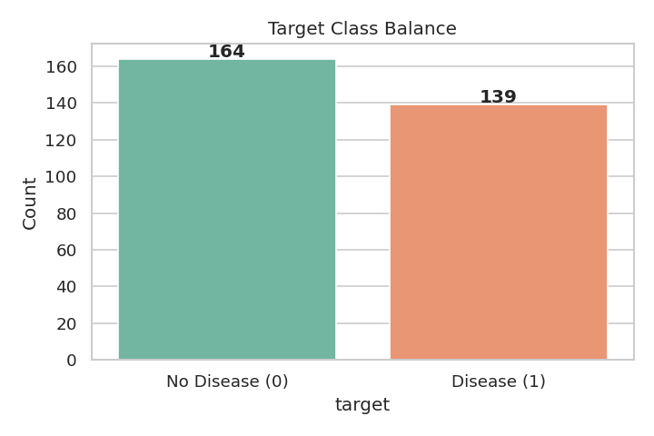
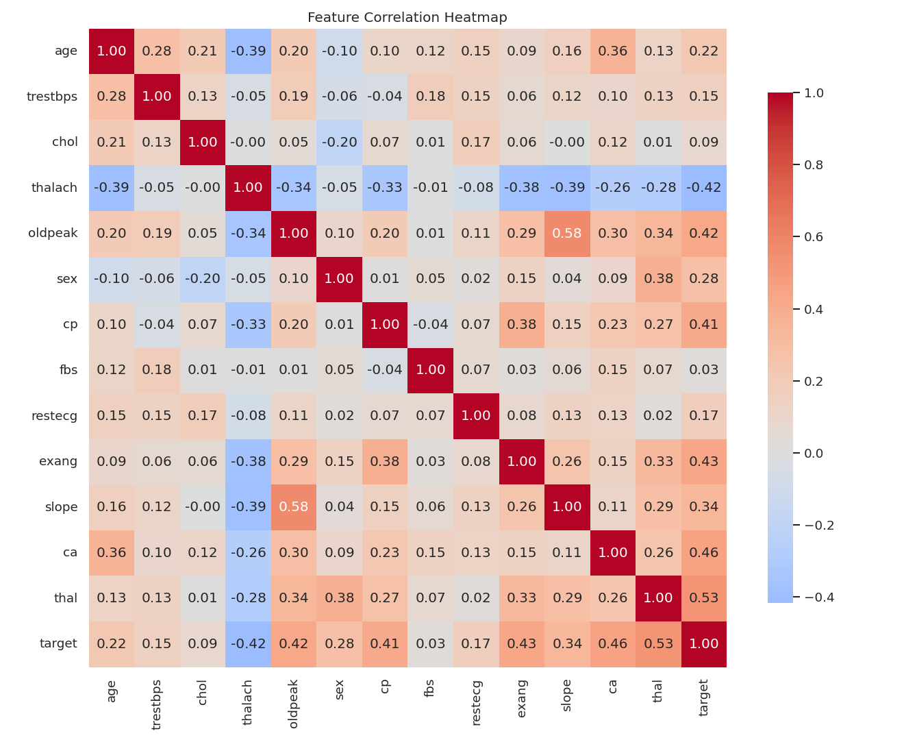
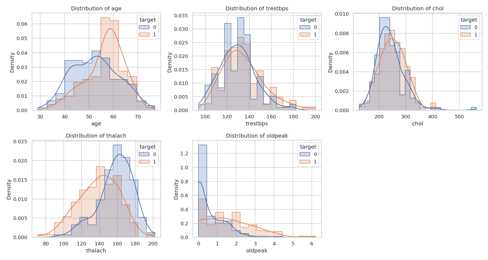
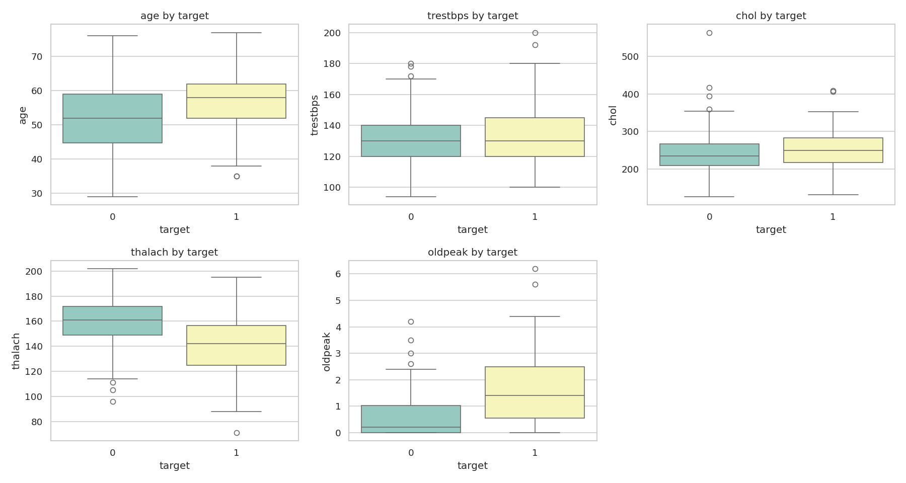
Key EDA findings: cp (chest pain type), thalach (max heart
rate, negatively correlated with disease), oldpeak, ca, and
thal show the strongest association with the target.
age, trestbps, chol, thalach, oldpeak): median impute → standard scale.sex, cp, fbs, restecg, exang, slope, ca, thal): most-frequent impute → one-hot encode (handle_unknown="ignore").Models trained (each inside a full Pipeline, tuned with
GridSearchCV, 5-fold stratified CV, scored on ROC-AUC):
C, penalty, solver.n_estimators, max_depth, min_samples_split.| Model | CV ROC-AUC | Test Acc | Precision | Recall | F1 | Test ROC-AUC |
|---|---|---|---|---|---|---|
| Logistic Regression ✓ | 0.899 | 0.885 | 0.839 | 0.929 | 0.881 | 0.966 |
| Random Forest | 0.903 | 0.836 | 0.821 | 0.821 | 0.821 | 0.944 |
Model selection: Logistic Regression was selected as the
production model (highest test ROC-AUC = 0.966 and best recall = 0.93, which
matters for a screening task where missing a positive case is costly). Best
hyper-parameters: C=0.1, penalty=l2, solver=liblinear.
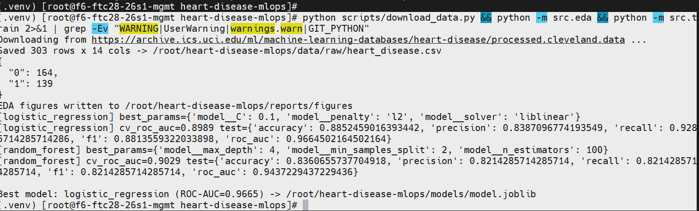
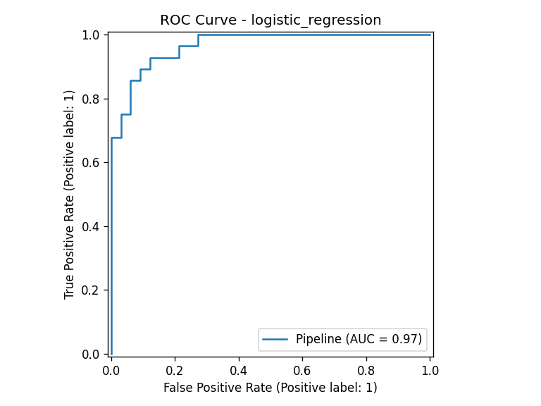
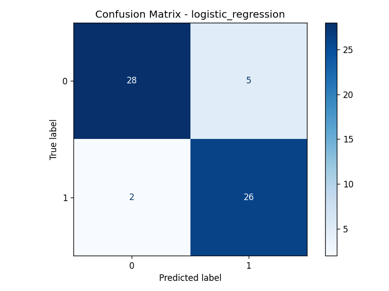
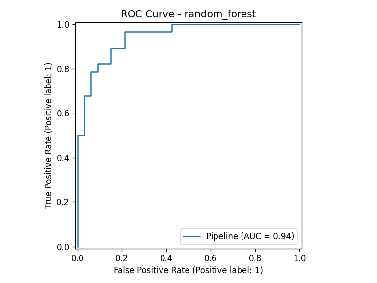
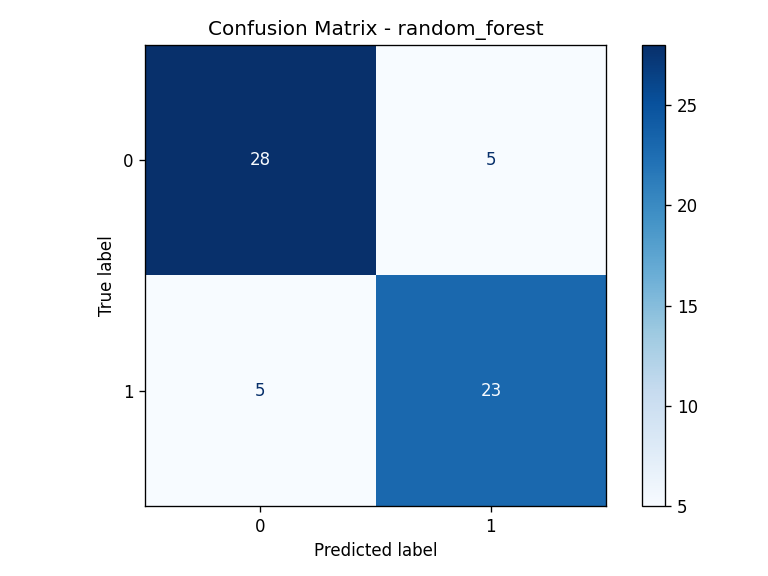
src/train.py logs every run to MLflow (./mlruns):
cv_roc_auc and all test metrics.mlflow ui --backend-store-uri ./mlruns # http://localhost:5000Experiment name: heart-disease-classification.
joblib → models/model.joblib
(preprocessing + estimator in one object, so inference uses the exact training transforms).models/metrics.json.RANDOM_STATE=42) saved to data/processed/{train,test}.csv.requirements.txt + environment.yml.Tests (tests/, pytest) — 13 tests covering:
/health, /predict, validation 422, /metrics).flake8 clean, black --check reports no changes, and all 13 pytest tests PASSED.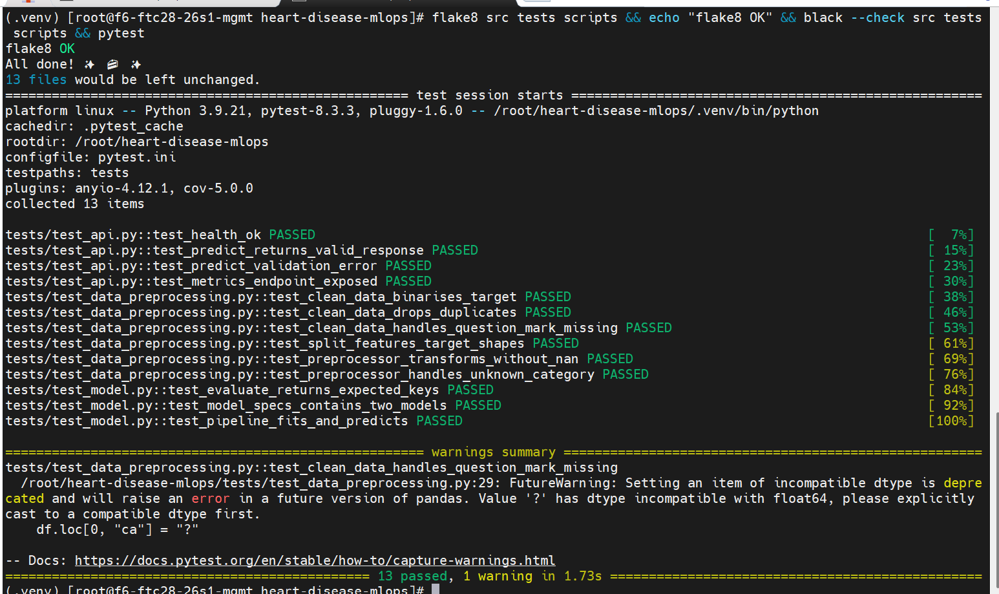
GitHub Actions (.github/workflows/ci.yml) on every push/PR:
/health.The pipeline fails on any lint/test/build error with clear logs.
main branch.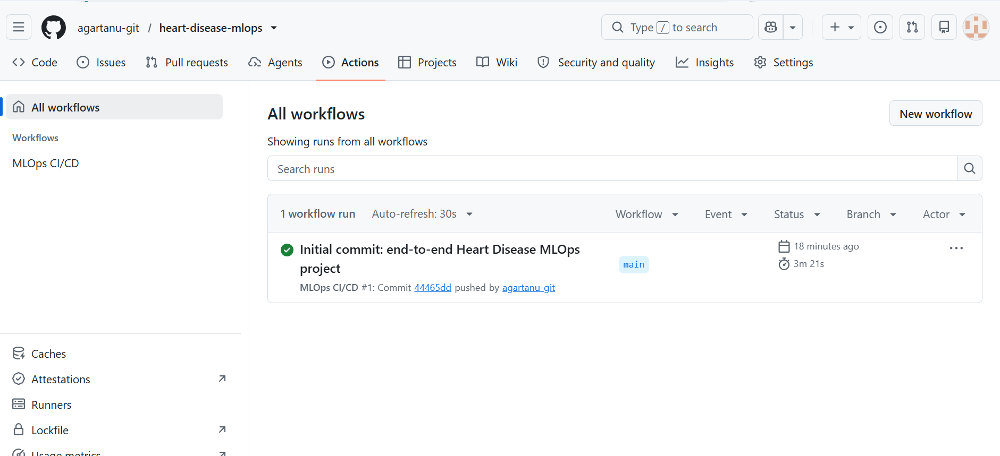
docker/Dockerfile — multi-stage, non-root user, Python-based
healthcheck, model baked in.
docker build -f docker/Dockerfile -t heart-disease-api:latest .
docker run -p 8000:8000 heart-disease-api:latestThe API exposes GET /health, POST /predict,
POST /predict/batch, GET /metrics and interactive docs at
/docs.
models/model.joblib and the application reports startup complete on port 8000.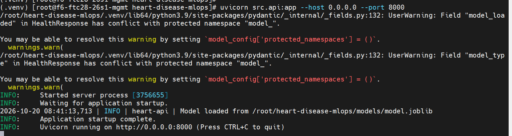
/health returns
{"status":"ok","model_loaded":true,"model_type":"LogisticRegression"},
the /metrics endpoint exposes the custom Prometheus metrics
(heart_predictions_total, heart_prediction_latency_seconds),
and the API's input validation rejects a malformed body with a 422 error —
demonstrating request validation.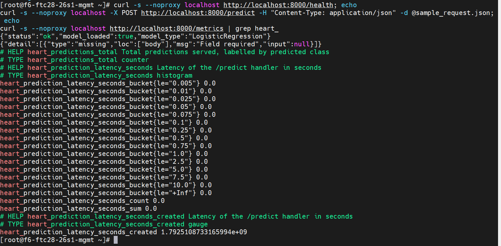
/predict call (run from the project directory with
-d @sample_request.json) returns
{"prediction":0,"label":"No Disease","confidence":0.5742,"probability_disease":0.4258}.
Building 12/12 FINISHED), producing heart-disease-api:latest. The container was separately verified running Up (healthy) and serving predictions.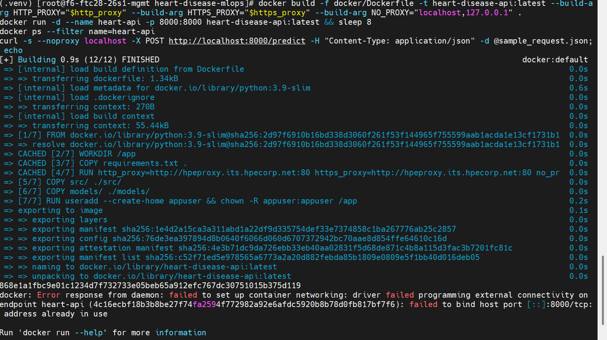
Kubernetes manifests (deployment/k8s/): namespace,
Deployment (2 replicas, readiness/liveness probes, resource limits), LoadBalancer
Service, Ingress, and HPA (CPU-based, 2→6 replicas). A parameterised
Helm chart is provided in deployment/helm/heart-disease-api/.
# Minikube
eval $(minikube docker-env)
docker build -f docker/Dockerfile -t heart-disease-api:latest .
kubectl apply -f deployment/k8s/
# or: helm install heart-api deployment/helm/heart-disease-api -n heart-disease --create-namespacekubectl get pods,svc -n heart-disease
showing running pods and the exposed Service endpoint.
/metrics: default FastAPI HTTP
metrics plus custom heart_predictions_total{predicted_class} and
heart_prediction_latency_seconds.docker compose up --build
# API http://localhost:8000 | Prometheus :9090 | Grafana :3000 (admin/admin)The custom metrics visible in Screenshot S3b above confirm the instrumentation is live and scrape-ready.
All code, Dockerfiles, Kubernetes/Helm manifests, CI/CD workflow, tests, report and figures are version-controlled and pushed to GitHub: github.com/agartanu-git/heart-disease-mlops.
.github/workflows, deployment, docker, monitoring, src, tests, reports, …) on the main branch.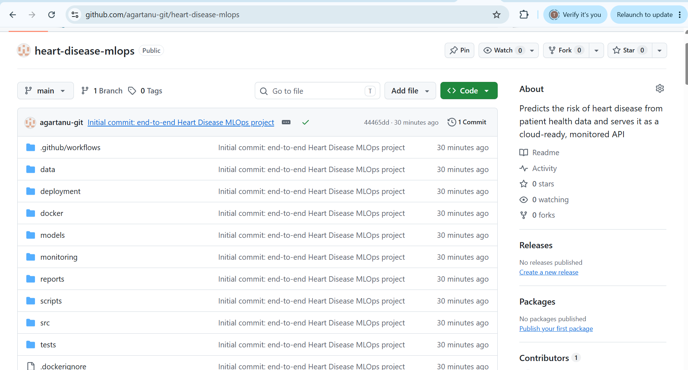